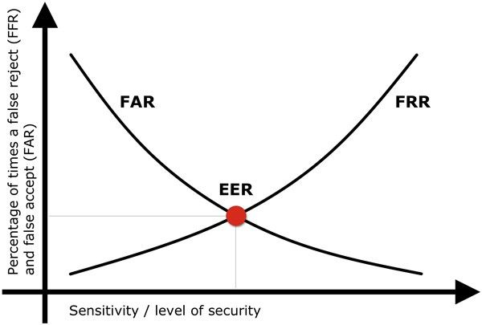

Biometric Authentication

Introduction
Biometric authentication refers to the validation of a user's identity by analyzing unique physical or behavioural traits. This type of authentication is distinct from traditional authentication methods that rely on something a user knows (like a password) or possesses (like a key or a card). Biometrics authentication offers a more personalized and often more secure method of ensuring that the person accessing a system or location is truly who they claim to be.
One of the primary reasons for the implementation of modern biometric authentication solutions is the difficulty in duplicating or stealing someone's unique biological characteristics or behavioural attributes. However, it's important to remember that like any technology, biometrics is not entirely foolproof. There are challenges, ranging from the potential for false positives or negatives to concerns about user privacy and the storage of biometric data.
Despite these challenges, the growth of biometric authentication technology signifies a move towards a more secure and personalized world. It represents an intersection of biology and technology, a synthesis of physical and digital resources that could redefine how we think about security, privacy, and human-machine interactions.
What is a Biometric Login?
A biometric login is a security process that uses the unique biological or behavioural characteristics of an individual to grant them access to a system, application, or facility. Instead of typing in a password or swiping a card, users present a unique feature they possess, be it their face, fingerprint, voice, or even the way they type.
The convenience factor is undeniable. Users do not need to remember complex passwords or carry around physical tokens. Furthermore, the risks associated with password breaches or lost access cards are mitigated. However, transitioning to a biometric system for logins also requires a shift in user mentality. Some might feel uneasy about having their biometric data stored, and there are concerns about what might happen if this data were to be compromised.
While the concept might sound futuristic to some, many of us already use various types of biometric authentication and logins in our daily lives. From unlocking our smartphones with a fingerprint or face scan to voice-controlled smart home devices, biometric authentication options logins are becoming an integral part of modern technology.
Biometric Authentication Example
The world of biometric authentication technology is vast and varied, with numerous real-world applications. One of the most commonly recognized examples is the fingerprint scanner on many smartphones and laptops. These devices use sensors to capture the unique patterns of a user's fingerprint, which is then used to unlock the device or authorize transactions.
Another prevalent example is facial recognition technology. Some advanced security systems in buildings use iris scans, recognizing individuals based on the unique patterns in their eyes.
Iris recognition is an advanced biometric authentication technique that is rapidly gaining traction in high-security sectors and in some consumer devices. This method revolves around the unique patterns found in the iris, the coloured part of the eye. Unlike fingerprints, which can change over time or get obscured by dirt or wear, the iris remains remarkably consistent throughout an individual's life, making it a highly reliable biometric.
An exciting use case of a biometric authentication device is the Abu Dhabi Airport, which has introduced a state-of-the-art facial recognition robot designed to streamline the customs process and engage travellers more interactively. This technology has been a highlight at the UAE's aviation hub, enhancing the passenger experience with its advanced features. Outfitted with sophisticated cameras and sensors, the robot boasts the capability to read and interpret the body language and facial expressions of a group of five to seven people, even from a distance of up to six meters. This functionality not only speeds up the customs process but also adds a layer of security and efficiency.
Other than brother control, biometric technology plays an important role in financial services, especially in fintech security. This innovation has a substantial impact on the banking and financial sectors, providing a robust shield against fraud and enhancing overall security measures. More than just a security feature, biometric authentication streamlines the transaction process, offering users a more seamless and efficient experience. Effective implementation of biometric authentication in fintech hinges not only on its technological prowess but also on its ability to safeguard user privacy, maintaining a delicate balance between convenience, security, and ethical responsibility.
Biometric Login
Biometric logins are steadily becoming the norm in various sectors due to their enhanced security and ease of use. A prime example is the fintech world. Many companies are integrating biometric logins into their systems to ensure that only authorized personnel can access sensitive information, and prevent fraud from happening. By doing away with passwords, they reduce the risk of data breaches caused by password-related vulnerabilities.
On the consumer front, biometric logins are prevalent in personal devices. Many modern smartphones and tablets offer users the option to unlock their mobile devices using their fingerprints, facial scans, or even iris scans. These biometric systems not only enhance security but also significantly improve the user experience by offering a quick and intuitive way to access the device.
What Do Biometrics Use to Authenticate Identity?
Biometrics authenticate identity by analyzing distinct physiological or behavioural attributes. Physiological biometrics, as the name suggests, are based on physical characteristics. This includes fingerprints, facial structures, iris or retinal patterns, and even DNA. These attributes are unique to each individual and remain relatively constant over time, making them reliable markers for identification.
Behavioural biometrics, on the other hand, focuses on the patterns of behaviour exhibited by individuals. This can include voice recognition, keystroke dynamics, or even gait analysis. While these biometric features might seem less tangible than physiological attributes, they can be equally effective in certain contexts. For instance, the rhythm and pressure someone uses when typing on a keyboard can be as distinctive as a fingerprint.
To make an automated fingerprint identification system effective, biometrics require sophisticated technology that can accurately capture these attributes, convert them into a digital format, and then compare them against a stored template. Only when a match is found is the identity authenticated.
Biometric Authentication Device
Biometric authentication devices are specialized hardware designed to capture and process biometric data. These biometric devices vary in complexity and functionality based on the type of biometric information and data they are intended to process.
For instance, fingerprint scanners, which are commonplace in many smartphones and security systems, use sensors to capture the unique ridge patterns of a user's finger. Facial recognition systems, on the other hand, might employ high-definition cameras combined with infrared sensors to accurately capture facial features and contours. Iris scanners use sophisticated imaging technology to capture the intricate patterns of the iris, which are unique to each individual.
Biometric Authentication Method
The realm of using biometric authentication solutions is diverse, with a multitude of methods catering to various needs and contexts. Physiological biometrics, such as fingerprints, facial recognition, and iris scans, are based on the physical characteristics of an individual. These methods are widely adopted due to their reliability and ease of use. For instance, fingerprint recognition is a staple in many consumer devices, while facial recognition is gaining traction in both consumer and security sectors.
Behavioural biometrics, such as voice recognition or keystroke dynamics, offer a different approach. They focus on the unique ways an individual behaves. For example, voice recognition systems analyze the pitch, tone, and rhythm of a person's voice, while keystroke dynamics study the unique way a person types on a keyboard.
Each method has its own set of advantages and potential challenges. While physiological biometrics might offer more consistency, behavioural biometrics can provide continuous authentication, monitoring a user's behaviour over time to ensure consistency.
How Does Biometric Authentication Work?
The process of biometric authentication can be segmented into two primary phases: enrollment and verification. During enrollment, an individual's biometric data is first captured using a suitable device. This raw data is then processed to extract essential features, creating a user's biometric data template. This template is stored securely, often in encrypted form, in a database or on the device itself.
During the verification phase, when the individual attempts to gain access, their biometric data is captured again. The system then processes this data and compares it to the stored template. Sophisticated algorithms are employed to determine if the newly captured biometric data match matches the stored template closely enough. If a match is found within an acceptable threshold, the individual is authenticated and granted access.
Two pivotal metrics are crucial for assessing system efficacy and user experience: the False Rejection Rate (FRR) and the False Acceptance Rate (FAR). The False Rejection Rate (FRR), also known as Type I error, is a measure of the frequency at which legitimate users are incorrectly denied access by the biometric system. A high FRR indicates a stringent system that, while secure, may lead to inconvenience and frustration due to frequent legitimate access denials. On the other hand, the False Acceptance Rate (FAR), or Type II error, quantifies the instances where unauthorized individuals are mistakenly granted access. A lower FAR is desirable for enhanced security, but overly strict criteria can inadvertently elevate the FRR.
The delicate balance between FRR and FAR is crucial in biometric system design, ensuring both security and user convenience. Optimizing these rates often involves refining algorithms and improving sensor accuracy, tailoring the system to the specific context of use, whether it's high-security environments or everyday consumer applications.

As mentioned, the biometric identification systems are designed to accommodate slight variations in data, ensuring that small changes in a user's biometric trait (like a minor cut on a fingertip) don't prevent them from being authenticated.
What is Biometric Authorization?
While authentication is about verifying the identity of a user, authorization determines what that authenticated user is allowed to do. Biometric authorization, then, is the process of granting or denying permissions to an authenticated user based on their biometric data. For instance, after a biometric security system verifies a user through a fingerprint scan, it might then determine what files, systems, or locations the user can access.
This adds an extra layer of security, ensuring that even within a system, users only have access to the data and functionalities relevant to their role or needs. Biometric authorization can be particularly useful in high-security environments or scenarios where different tiers of access are required.
Types of Biometric Authentication
Biometric authentication methods can be broadly categorized into physiological and behavioural types, as mentioned earlier. However, within these categories, there's a plethora of methods, each suited to different contexts and needs.
Physiological Biometrics:
- Fingerprint Recognition: Suitable for consumer devices and systems requiring quick authentication.
- Facial Recognition: Increasingly used in surveillance, consumer electronics, and security checkpoints.
- Iris and Retina Scans: Often used in high-security areas due to their high level of uniqueness and reliability.
- Hand Geometry: Employed in certain industrial sectors and security checkpoints where the size and shape of the hand can be used for quick identification.

Behavioral Biometrics:
- Voice Recognition: Commonly integrated into customer service sectors, virtual assistants, and some security systems.
- Keystroke Dynamics: Employed mainly in continuous authentication systems, especially in secure computing environments.
- Gait Analysis: Still in its nascent stages but holds promise for security systems that can identify individuals based on their walking patterns.
- Signature Dynamics: Analyzes the way an individual signs, including the speed, pressure, and rhythm of the signature.
Choosing the right type of biometric authentication depends on several factors, including the level of security required, the user base, the environment in which it will be used, and budget considerations.
Conclusion
In conclusion, biometric authentication is much more than a trend in the tech world; it's a practical response to the growing need for more secure and efficient ways to verify identity in our digitally interconnected lives. This field, with its myriad of methods—from the fingerprints we've used for years to the more recent exploration of behavioural patterns like typing rhythms—offers real solutions to a variety of security challenges.
As we look ahead, it's clear that the journey of biometrics is just beginning. Technological advancements continue to push the boundaries of what's possible, making systems more accurate, faster, and even more integrated into our everyday devices.